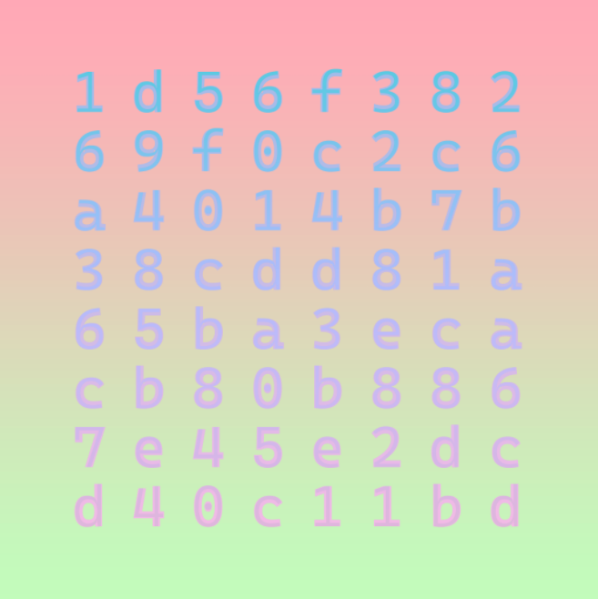

Pick-A-Twin


THis is a very short description of the NFT
kleee02 is one of the first on-chain generative art projects. Created in April 2019 by Kelian Maissen and Johannes Gees, it is inspired by conceptual art and Paul Kleee’s famous quote: "A line is a dot that goes for a walk".